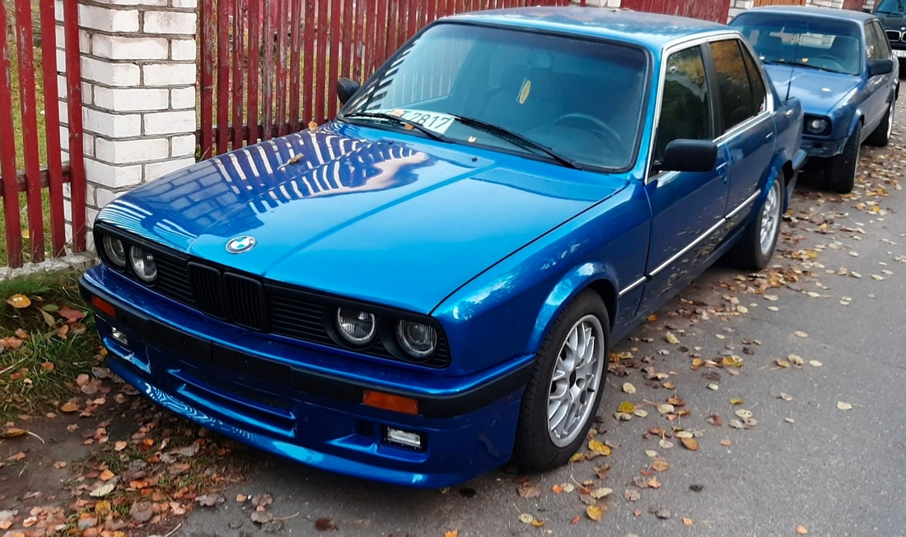
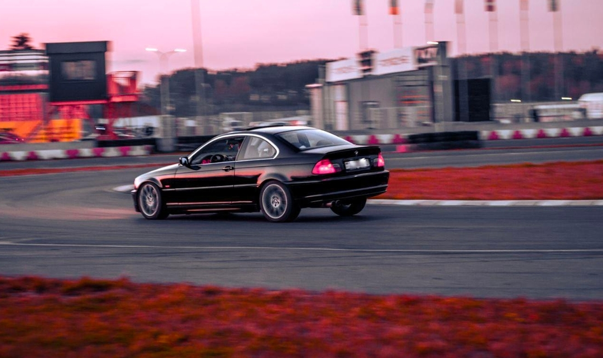
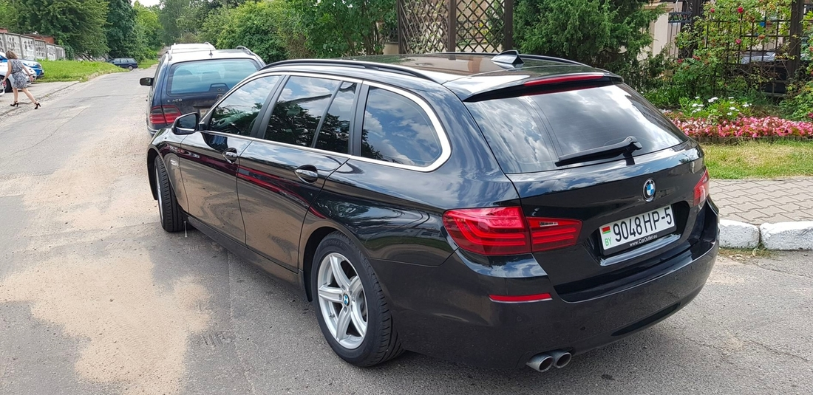
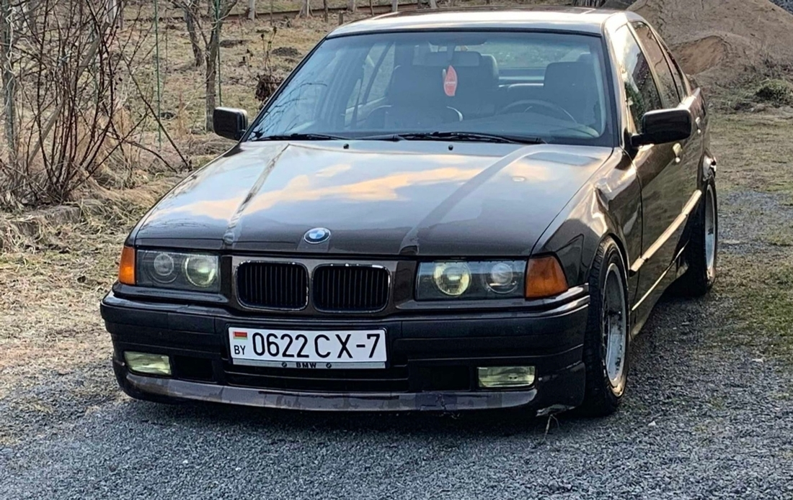
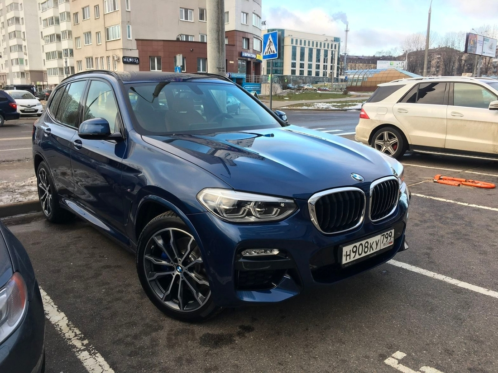
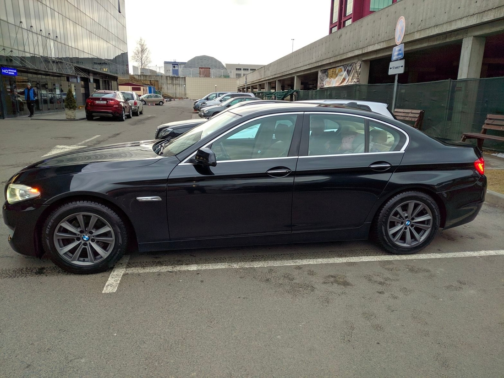

Владелец этого красивого автомобиля, ставшего уже классикой, дает совет — если удалось найти E30 с «живым» (в хорошем смысле этого слова) кузовом, то нужно брать невзирая больше ни на что. Все остальное можно починить с помощью молотка и отвертки. К тому же запчасти для E30 в Беларуси стоят не так уж дорого. Технически машина такая же простая, как некоторые модели Lada 1990-х годов.
Читать отзыв
«Рулится как картинг, весит как пушинка. Едет на свои годы отлично, плюс куча информации по свапам в сети», — владелец намекает, что на старую «тройку» легко найти другой двигатель, какой вам будет по душе. У самого автора модель 1986 года выпуска с пробегом 300 тыс. км. Автомобиль оснащен 2,8-литровым двигателем и механической коробкой передач. Ну и взгляните только, какой красивый кузов у этой «тридцатки»!
Владелец не менее интересной «тройки» пишет, что его машина способна довезти вас куда угодно, причем всю дорогу вы будете улыбаться. Но важно заботиться об автомобиле, чтобы он отвечал взаимностью! «Главное условие для покупки — хорошее состояние», — делится, в общем-то, очевидным выводом автор отзыва. По его словам, если взять «убитый» экземпляр, придется вложить в него очень и очень много. Еще владелец E46 Coupe предупреждает, что после покупки подобной машины может возникнуть непреодолимое желание что-то докупить.
Читать отзыв
На автомобиль установлена рядная «шестерка» M54B30 с отдачей 231 л. с. Крутящий момент агрегата — 300 Н·м. По словам владельца, нужно всегда помнить, что двигатель мощный и искушает водителя использовать имеющийся потенциал. На дорогах общего пользования делать этого, безусловно, не нужно. «Выпускать пар» следует на треке. Так, судя по фотографиям, делает хозяин этого купе. Оценка автора отзыва — 4,4 звезды. Среди недостатков он отмечает объем багажника, шумоизоляцию, запас хода, стоимость обслуживания и расход топлива.
«Чисто случайно оказался владельцем марки BMW и ни разу еще не пожалел о приобретении», — оптимистично начинается отзыв. Вообще, дизельный универсал премиум-класса многие считают идеальным автомобилем. Вместительный, экономичный, престижный, комфортабельный и ликвидный. Что еще нужно? Двухлитровый 220-сильный турбомотор обладает паровозной тягой и отличается высокой надежностью.
Читать отзыв
Данный 5-Series F11 сошел с конвейера в 2017 году и проехал с тех пор 230 тыс. км. Автомобиль заднеприводный с 8-ступенчатым «автоматом» фирмы ZF. Судя по описанию, машина «на чипе» — залита прошивка Stage 1. Родная цепь ГРМ при должной эксплуатации должна отходить более 300 тыс. км. На задней подвеске имеются пневмобаллоны. Владелец не отметил ни одного недостатка данной модели, поэтому оценка — 5 звезд!
Очень подробный отзыв оставил человек, владеющий «тройкой» в кузове Е36. Седан оснащен 2,6-литровым атмосферным двигателем мощностью 200 л. с. Мужчина купил эту машину несмотря на слухи, что придется мириться с расходом масла и регулярными дорогостоящими ремонтами. В итоге не пожалел о том, что взял «баварца». Премиальный седан D-класса оснащен мотором M50B26.
Читать отзыв
Масло меняется каждые 6—7 тыс. км. За такой период смазочный материал не уходит — владелец сливает столько же, сколько заливал. Автомобиль оборудован механической коробкой передач, прекрасно держит дорогу и управляется с невероятной четкостью. Двух сотен имеющихся сил хватает для динамичной езды. Весит Е36 немного. Отзыв заканчивается так: «Подводя итог, хотелось бы сказать, что считаю автомобиль практически идеальным соотношением цены и качества, так как при относительно небольших вложениях можно получить бесконечное количество эмоций».
Есть в «Отзывах» и совсем свежие машины. Вот, например, X3 G01 2019 года выпуска. Пробег автомобиля составляет немалые 130 тыс. км. Кроссовер оснащен одним из самых лучших дизельных моторов — 3-литровой «шестеркой». Владелец так описывает свое транспортное средство: «Отличное сочетание практичности, динамичности и стиля. Каждый раз получаешь удовольствие от езды».
Читать отзыв
Если ехать по трассе со скоростью до 160 км/ч, машина идет уверенно и есть запас до 240 км/ч на случай непредвиденных обстоятельств. При динамичной езде по загородной дороге расход топлива кроссовера составляет 8,2 литра на 100 км. При скорости 100—120 км/ч — и того меньше. Из минусов отмечен быстрый износ передних шин. Кроме того, владельца не устраивает постоянно «отваливающийся» Bluetooth и подписка, которую требует мультимедийная система BMW.
Имеется в нашей базе отзыв и на бензиновую «пятерку» в кузове F10. Машина оборудована 2-литровым турбомотором мощностью 245 л. с. Тяга — 350 Н·м. Это полноприводный 528i xDrive с автоматической коробкой передач и пробегом 220 тыс. км. Владелец покупал эту BMW в Москве в 2018 году. Брал бэушную — в возрасте пяти лет. Мужчина очень подробно описывает все нюансы владения машиной. Вот бы каждый отзыв был таким!
Читать отзыв
Среди недостатков отмечены стоимость обслуживания, расход топлива и технологичность. Последнее объясняется тем, что без компьютера в этом седане практически ничего нельзя сделать. Даже поменять аккумулятор. Обратная сторона медали — вся история обслуживания автомобиля хранится в логах. Сюрпризов быть не должно.
